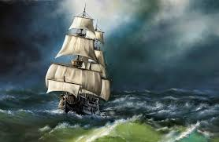

THE MARY CELESTE INCIDENT
On December 5, 1872, the British brigantine Dei Gratia was sailing through the Atlantic between the Azores and Portugal when its crew spotted a ship drifting aimlessly. Upon boarding the vessel, they discovered it was the Mary Celeste, which had left New York City eight days before them. To their shock, the ship was completely deserted. The captain, Benjamin Briggs, his wife and two-year-old daughter, and all seven crew members had vanished into thin air.

The Baffling Clues: The ship was found in remarkably good condition. It was seaworthy, under partial sail, and stocked with a six-month supply of food and water. The cargo—1,701 barrels of industrial alcohol—was almost entirely intact. Most tellingly, the crew's personal belongings and valuables were still in their quarters, ruling out a traditional pirate raid. However, a few odd details emerged:
- The ship's only lifeboat was missing.
- The daily logbook was up to date until November 25, ten days prior to the discovery.
- About 3.5 feet of water was in the hold, though this was not nearly enough to sink the ship.
- One of the ship's pumps was found disassembled on the deck.
The Vapor Explosion Theory: For over a century, theories ranged from mutiny and giant squid attacks to the fictionalized "J. Habakuk Jephson" story by Arthur Conan Doyle. However, a modern leading theory—bolstered by recent chemical research—suggests a "pressure cooker" effect. Nine of the alcohol barrels (made of porous red oak) had leaked, filling the hold with highly volatile ethanol vapors. As the ship moved from cold New York to the warmer Azores, the vapors likely expanded. It is theorized that a small spark caused a "flash fire" or a frightening (but non-damaging) explosion of vapor. Terrified that the ship was about to blow up, Captain Briggs likely ordered everyone into the lifeboat to wait at a safe distance on a tow line. A sudden squall or a snapped rope would have then separated the lifeboat from the Mary Celeste, leaving the ten people at the mercy of the open Atlantic.
Key Facts
Date: Discovered December 5, 1872 (Abandoned roughly November 25)
Location: Atlantic Ocean, off the Azores Islands
Casualties: 10 people missing and presumed dead
Cause: Officially unsolved; however, scientific consensus points to a panic-driven abandonment caused by leaking alcohol fumes and a perceived risk of explosion.
The Mary Celeste remains the quintessential "Ghost Ship" mystery. It highlights how even the most experienced mariners (Briggs was a highly respected captain) can be driven to fatal decisions by a perceived, invisible threat. The incident led to much more rigorous standards for transporting volatile chemical cargo and served as a catalyst for maritime laws regarding salvage rights and death-at-sea investigations.